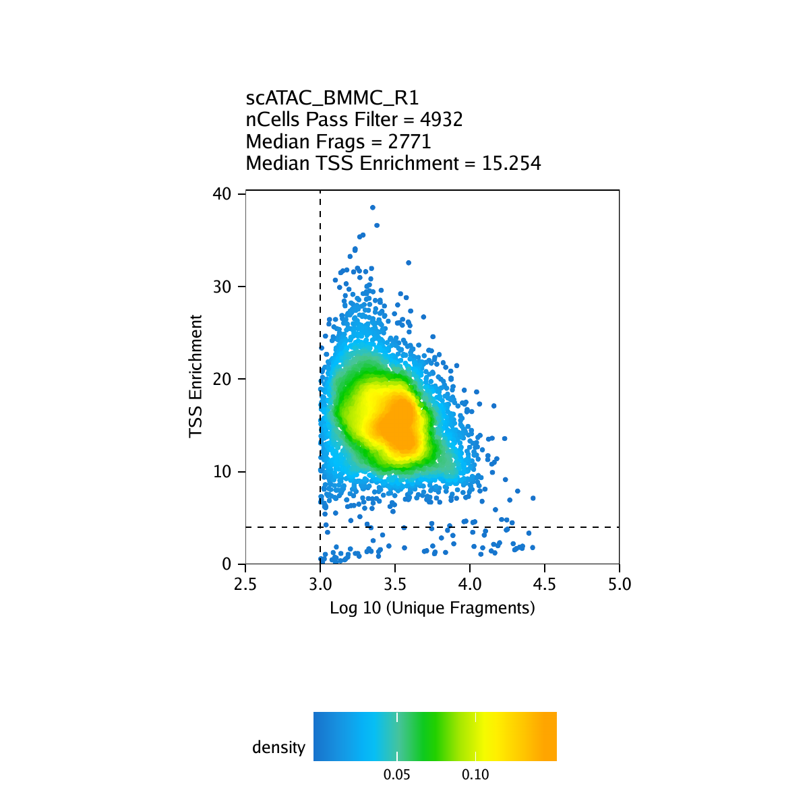
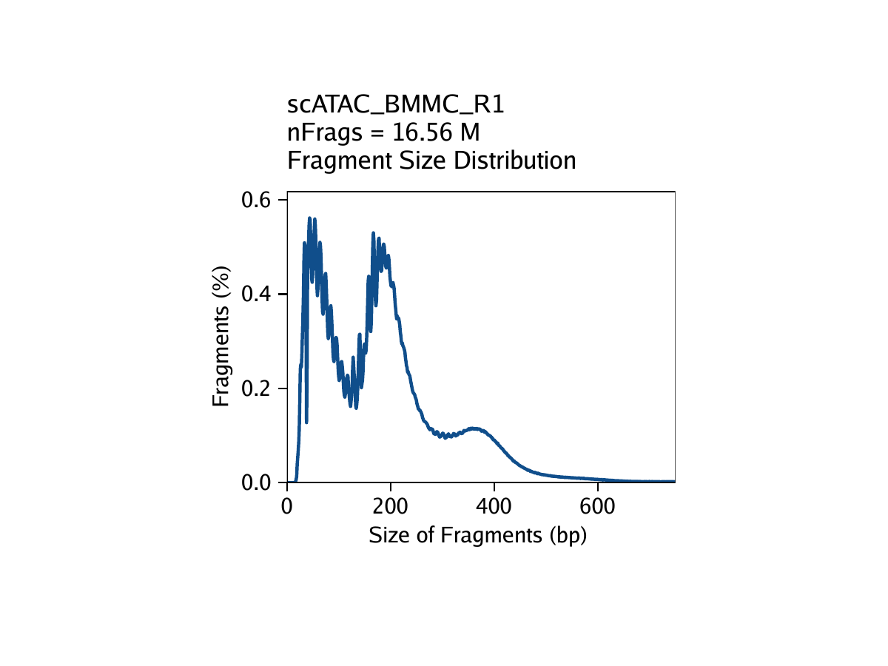
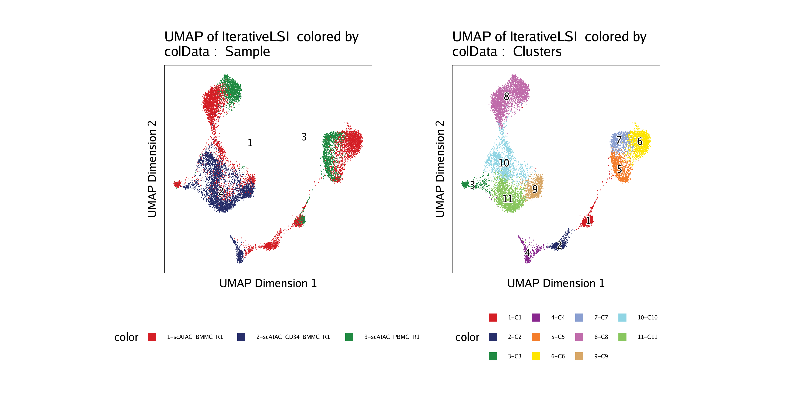

tutorial.RmdThis is a brief ArchR tutorial. It does not showcase all of ArchR’s functionality nor explain each of the steps in detail. Please see the searchable full user’s manual for an in-depth tutorial using real-world data and a full description of all aspects of ArchR analysis. Importantly, this tutorial and the full user manual assume that you are running ArchR locally.
First, we load the ArchR library. If this fails, you have not properly installed ArchR and should revisit the installation instructions. We also recommend setting and remembering a known seed to facilitate replication of operations requiring randomization.
Next, we set the default number of threads for parallelized operations in ArchR functions. You should change the value passed the threads to match the specifications of your local machine.
addArchRThreads(threads = 16) ## Setting default number of Parallel threads to 16.
The Hematopoeisis tutorial data can be downloaded using the getTutorialData() function. The tutorial data is approximately 0.5 GB in size. If you have already downloaded the tutorial in the current working directory, ArchR will bypass downloading.
inputFiles <- getTutorialData("Hematopoiesis")
inputFiles## scATAC_BMMC_R1
## “HemeFragments/scATAC_BMMC_R1.fragments.tsv.gz”
## scATAC_CD34_BMMC_R1
## “HemeFragments/scATAC_CD34_BMMC_R1.fragments.tsv.gz”
## scATAC_PBMC_R1
## “HemeFragments/scATAC_PBMC_R1.fragments.tsv.gz”
Before we begin, we need add a reference genome annotation for ArchR to have access to chromosome and gene information. ArchR natively supports hg19, hg38, mm9, and mm10.
addArchRGenome("hg19")## Setting default genome to Hg19.
Now we will create our Arrow files which will take 10-15 minutes. For each sample, this step will:
geneAnnotation that was defined when we called addArchRGenome().ArrowFiles <- createArrowFiles(
inputFiles = inputFiles,
sampleNames = names(inputFiles),
filterTSS = 4, #Dont set this too high because you can always increase later
filterFrags = 1000,
addTileMat = TRUE,
addGeneScoreMat = TRUE
)## Using GeneAnnotation set by addArchRGenome(Hg19)!
## Using GeneAnnotation set by addArchRGenome(Hg19)!
## ArchR logging to : ArchRLogs/ArchR-createArrows-69ef6ba2e1c7-Date-2020-04-21_Time-16-18-35.log
## If there is an issue, please report to github with logFile!
## Cleaning Temporary Files
## 2020-04-21 16:18:35 : Batch Execution w/ safelapply!, 0 mins elapsed.
## ArchR logging successful to : ArchRLogs/ArchR-createArrows-69ef6ba2e1c7-Date-2020-04-21_Time-16-18-35.log
We can inspect the ArrowFiles object to see that it is actually just a character vector of Arrow file paths.
## “scATAC_BMMC_R1.arrow” “scATAC_CD34_BMMC_R1.arrow”
## “scATAC_PBMC_R1.arrow”
Strict quality control (QC) of scATAC-seq data is essential to remove the contribution of low-quality cells. In ArchR, we consider three characteristics of data:
For our tutorial data, an example of these QC plots is shown below for the BMMC sample:

After Arrow file creation, we can infer potential doublets (a single droplet containing multiple cells) that can confound downstream results. This is done using the addDoubletScores() function.
doubScores <- addDoubletScores(
input = ArrowFiles,
k = 10, #Refers to how many cells near a "pseudo-doublet" to count.
knnMethod = "UMAP", #Refers to the embedding to use for nearest neighbor search.
LSIMethod = 1
)## ArchR logging to : ArchRLogs/ArchR-addDoubletScores-69ef56ebfd4d-Date-2020-04-21_Time-16-24-31.log
## If there is an issue, please report to github with logFile!
## 2020-04-21 16:24:31 : Batch Execution w/ safelapply!, 0 mins elapsed.
## 2020-04-21 16:24:31 : scATAC_BMMC_R1 (1 of 3) : Computing Doublet Statistics, 0 mins elapsed.
## scATAC_BMMC_R1 (1 of 3) : UMAP Projection R^2 = 0.97229
## scATAC_BMMC_R1 (1 of 3) : UMAP Projection R^2 = 0.97229
## 2020-04-21 16:26:31 : scATAC_CD34_BMMC_R1 (2 of 3) : Computing Doublet Statistics, 2.007 mins elapsed.
## scATAC_CD34_BMMC_R1 (2 of 3) : UMAP Projection R^2 = 0.99077
## scATAC_CD34_BMMC_R1 (2 of 3) : UMAP Projection R^2 = 0.99077
## 2020-04-21 16:28:03 : scATAC_PBMC_R1 (3 of 3) : Computing Doublet Statistics, 3.531 mins elapsed.
## scATAC_PBMC_R1 (3 of 3) : UMAP Projection R^2 = 0.97496
## scATAC_PBMC_R1 (3 of 3) : UMAP Projection R^2 = 0.97496
## ArchR logging successful to : ArchRLogs/ArchR-addDoubletScores-69ef56ebfd4d-Date-2020-04-21_Time-16-24-31.log
ArchRProject
With our Arrow files in hand, we are now ready to create an ArchRProject. An ArchRProject is associated with a set of Arrow files and is the backbone of nearly all ArchR analyses.
proj <- ArchRProject(
ArrowFiles = ArrowFiles,
outputDirectory = "HemeTutorial",
copyArrows = TRUE #This is recommened so that you maintain an unaltered copy for later usage.
)## Using GeneAnnotation set by addArchRGenome(Hg19)!
## Using GeneAnnotation set by addArchRGenome(Hg19)!
## Validating Arrows…
## Getting SampleNames…
##
## Copying ArrowFiles to Ouptut Directory! If you want to save disk space set copyArrows = FALSE
## 1 2 3
## Getting Cell Metadata…
##
## Merging Cell Metadata…
## Initializing ArchRProject…
We can also ask which data matrices are available within the ArchRProject which will be useful downstream once we start adding to this project:
getAvailableMatrices(proj)## [1] “GeneScoreMatrix” “TileMatrix”
Now we can filter putative doublets based on the previously determined doublet scores using the filterDoublets() function. This doesn’t physically remove data from the Arrow files but rather tells the ArchRProject to ignore these cells for downstream analysis.
proj <- filterDoublets(ArchRProj = proj)## Filtering 410 cells from ArchRProject!
## scATAC_BMMC_R1 : 243 of 4932 (4.9%)
## scATAC_CD34_BMMC_R1 : 107 of 3275 (3.3%)
## scATAC_PBMC_R1 : 60 of 2454 (2.4%)
ArchR implements an iterative LSI dimensionality reduction via the addIterativeLSI() function.
proj <- addIterativeLSI(ArchRProj = proj, useMatrix = "TileMatrix", name = "IterativeLSI")## Checking Inputs…
## ArchR logging to : ArchRLogs/ArchR-addIterativeLSI-69ef14e7f129-Date-2020-04-21_Time-16-29-45.log
## If there is an issue, please report to github with logFile!
## 2020-04-21 16:29:46 : Computing Total Accessibility Across All Features, 0.005 mins elapsed.
## 2020-04-21 16:29:49 : Computing Top Features, 0.068 mins elapsed.
## ###########
## 2020-04-21 16:29:50 : Running LSI (1 of 2) on Top Features, 0.077 mins elapsed.
## ###########
## 2020-04-21 16:29:50 : Sampling Cells (N = 10002) for Estimated LSI, 0.078 mins elapsed.
## 2020-04-21 16:29:50 : Creating Sampled Partial Matrix, 0.078 mins elapsed.
## 2020-04-21 16:29:58 : Computing Estimated LSI (projectAll = FALSE), 0.208 mins elapsed.
## 2020-04-21 16:30:38 : Identifying Clusters, 0.876 mins elapsed.
## 2020-04-21 16:31:00 : Identified 5 Clusters, 1.241 mins elapsed.
## 2020-04-21 16:31:00 : Saving LSI Iteration, 1.242 mins elapsed.
## 2020-04-21 16:31:21 : Creating Cluster Matrix on the total Group Features, 1.593 mins elapsed.
## 2020-04-21 16:31:31 : Computing Variable Features, 1.759 mins elapsed.
## ###########
## 2020-04-21 16:31:31 : Running LSI (2 of 2) on Variable Features, 1.764 mins elapsed.
## ###########
## 2020-04-21 16:31:31 : Creating Partial Matrix, 1.764 mins elapsed.
## 2020-04-21 16:31:40 : Computing LSI, 1.911 mins elapsed.
## 2020-04-21 16:32:18 : Finished Running IterativeLSI, 2.541 mins elapsed.
To call clusters in this reduced dimension sub-space, we use the addClusters() function which uses Seurat’s graph clustering as the default clustering method.
proj <- addClusters(input = proj, reducedDims = "IterativeLSI")## ArchR logging to : ArchRLogs/ArchR-addClusters-69ef73b1d963-Date-2020-04-21_Time-16-32-18.log
## If there is an issue, please report to github with logFile!
## 2020-04-21 16:32:19 : Running Seurats FindClusters (Stuart et al. Cell 2019), 0.004 mins elapsed.
## Computing nearest neighbor graph
## Computing SNN
## Modularity Optimizer version 1.3.0 by Ludo Waltman and Nees Jan van Eck
##
## Number of nodes: 10251
## Number of edges: 498555
##
## Running Louvain algorithm…
## Maximum modularity in 10 random starts: 0.8575
## Number of communities: 11
## Elapsed time: 0 seconds
## 2020-04-21 16:32:38 : Testing Outlier Clusters, 0.32 mins elapsed.
## 2020-04-21 16:32:38 : Assigning Cluster Names to 11 Clusters, 0.32 mins elapsed.
## 2020-04-21 16:32:38 : Finished addClusters, 0.322 mins elapsed.
We can visualize our scATAC-seq data using a 2-dimensional representation such as Uniform Manifold Approximation and Projection (UMAP). To do this, we add a UMAP embedding to our ArchRProject object with the addUMAP() function. This function uses the uwot package to perform UMAP.
proj <- addUMAP(ArchRProj = proj, reducedDims = "IterativeLSI")## 16:32:38 UMAP embedding parameters a = 0.7669 b = 1.223
## 16:32:38 Read 10251 rows and found 30 numeric columns
## 16:32:38 Using Annoy for neighbor search, n_neighbors = 40
## 16:32:38 Building Annoy index with metric = cosine, n_trees = 50
## 0% 10 20 30 40 50 60 70 80 90 100%
## [—-|—-|—-|—-|—-|—-|—-|—-|—-|—-|
## **************************************************|
## 16:32:41 Writing NN index file to temp file /tmp/RtmpJ4Z9d9/file69ef223c61d2
## 16:32:41 Searching Annoy index using 10 threads, search_k = 4000
## 16:32:42 Annoy recall = 100%
## 16:32:44 Commencing smooth kNN distance calibration using 10 threads
## 16:32:45 Initializing from normalized Laplacian + noise
## 16:32:46 Commencing optimization for 200 epochs, with 623598 positive edges
## 16:32:58 Optimization finished
Using this UMAP, we can visualize various attributes of our cells which are stored in a matrix called cellColData in our ArchRProject. To do this, we use the plotEmbedding() function and we specify the variable to use for coloration via a combination of the colorBy and name parameters.
For example, we can color by “Sample”:
p1 <- plotEmbedding(ArchRProj = proj, colorBy = "cellColData", name = "Sample", embedding = "UMAP")## ArchR logging to : ArchRLogs/ArchR-plotEmbedding-69ef25160449-Date-2020-04-21_Time-16-33-00.log
## If there is an issue, please report to github with logFile!
## Getting UMAP Embedding
## ColorBy = cellColData
## Plotting Embedding
## 1
## ArchR logging successful to : ArchRLogs/ArchR-plotEmbedding-69ef25160449-Date-2020-04-21_Time-16-33-00.log
Or we can color by “Clusters”:
p2 <- plotEmbedding(ArchRProj = proj, colorBy = "cellColData", name = "Clusters", embedding = "UMAP")## ArchR logging to : ArchRLogs/ArchR-plotEmbedding-69ef420f8c0a-Date-2020-04-21_Time-16-33-01.log
## If there is an issue, please report to github with logFile!
## Getting UMAP Embedding
## ColorBy = cellColData
## Plotting Embedding
## 1
## ArchR logging successful to : ArchRLogs/ArchR-plotEmbedding-69ef420f8c0a-Date-2020-04-21_Time-16-33-01.log
ggAlignPlots(p1, p2, type = "h")
To save an editable vectorized version of this plot, we use the plotPDF() function.
plotPDF(p1,p2, name = "Plot-UMAP-Sample-Clusters.pdf",
ArchRProj = proj, addDOC = FALSE, width = 5, height = 5)## [1] “plotting ggplot!”
## [1] “plotting ggplot!”
## [1] 0
We can try to assign biological labels to these clusters using marker genes of known hematopoietic regulators. First, we add imputation weights using MAGIC to help smooth the dropout noise in our gene scores.
proj <- addImputeWeights(proj)## ArchR logging to : ArchRLogs/ArchR-addImputeWeights-69ef433c71d0-Date-2020-04-21_Time-16-33-19.log
## If there is an issue, please report to github with logFile!
## 2020-04-21 16:33:19 : Computing Impute Weights Using Magic (Cell 2018), 0 mins elapsed.
Now we can overlay our marker gene scores on our 2D UMAP embedding.
markerGenes <- c(
"CD34", #Early Progenitor
"GATA1", #Erythroid
"PAX5", "MS4A1", "MME", #B-Cell Trajectory
"CD14", "MPO", #Monocytes
"CD3D", "CD8A"#TCells
)
p <- plotEmbedding(
ArchRProj = proj,
colorBy = "GeneScoreMatrix",
name = markerGenes,
embedding = "UMAP",
imputeWeights = getImputeWeights(proj)
)## Getting ImputeWeights
## ArchR logging to : ArchRLogs/ArchR-plotEmbedding-69ef2f10a62d-Date-2020-04-21_Time-16-33-31.log
## If there is an issue, please report to github with logFile!
## Getting UMAP Embedding
## ColorBy = GeneScoreMatrix
## Getting Matrix Values…
## 2020-04-21 16:33:32 :
##
## Imputing Matrix
## Using weights on disk
## Using weights on disk
## Plotting Embedding
## 1 2 3 4 5 6 7 8 9
## ArchR logging successful to : ArchRLogs/ArchR-plotEmbedding-69ef2f10a62d-Date-2020-04-21_Time-16-33-31.log
To plot a specific gene we can subset this plot list using the gene name.
To plot all genes we can use cowplot to arrange the 9 different plots together. Each of these marker genes lights up the corresponding cell clusters. For example, we infer that the cells that have the highest gene score for CD3D, a known T cell marker, are in fact T cells.
#Rearrange for grid plotting
p2 <- lapply(p, function(x){
x + guides(color = FALSE, fill = FALSE) +
theme_ArchR(baseSize = 6.5) +
theme(plot.margin = unit(c(0, 0, 0, 0), "cm")) +
theme(
axis.text.x=element_blank(),
axis.ticks.x=element_blank(),
axis.text.y=element_blank(),
axis.ticks.y=element_blank()
)
})
do.call(cowplot::plot_grid, c(list(ncol = 3),p2))To save an editable vectorized version of this plot, we use the plotPDF() function.
plotPDF(plotList = p,
name = "Plot-UMAP-Marker-Genes-W-Imputation.pdf",
ArchRProj = proj,
addDOC = FALSE, width = 5, height = 5)## [1] “plotting ggplot!”
## [1] “plotting ggplot!”
## [1] “plotting ggplot!”
## [1] “plotting ggplot!”
## [1] “plotting ggplot!”
## [1] “plotting ggplot!”
## [1] “plotting ggplot!”
## [1] “plotting ggplot!”
## [1] “plotting ggplot!”
## [1] 0
In addition to plotting gene scores per cell as a UMAP overlay, we can browse the local chromatin accessibility at these marker genes on a per cluster basis with genome browser tracks. To do this, we use the plotBrowserTrack() function which will create a list of plots, one for each of the genes specified by markerGenes.
p <- plotBrowserTrack(
ArchRProj = proj,
groupBy = "Clusters",
geneSymbol = markerGenes,
upstream = 50000,
downstream = 50000
)## ArchR logging to : ArchRLogs/ArchR-plotBrowserTrack-69ef1ca18f89-Date-2020-04-21_Time-16-34-17.log
## If there is an issue, please report to github with logFile!
## 2020-04-21 16:34:17 : Validating Region, 0.006 mins elapsed.
## GRanges object with 9 ranges and 2 metadata columns:
## seqnames ranges strand | gene_id symbol
##|
## [1] chr1 208059883-208084683 - | 947 CD34
## [2] chrX 48644982-48652717 + | 2623 GATA1
## [3] chr9 36838531-37034476 - | 5079 PAX5
## [4] chr11 60223282-60238225 + | 931 MS4A1
## [5] chr3 154741913-154901518 + | 4311 MME
## [6] chr5 140011313-140013286 - | 929 CD14
## [7] chr17 56347217-56358296 - | 4353 MPO
## [8] chr11 118209789-118213459 - | 915 CD3D
## [9] chr2 87011728-87035519 - | 925 CD8A
## ——-
## seqinfo: 24 sequences from hg19 genome
## 2020-04-21 16:34:17 : Adding Bulk Tracks (1 of 9), 0.007 mins elapsed.
## 2020-04-21 16:34:19 : Adding Gene Tracks (1 of 9), 0.033 mins elapsed.
## 2020-04-21 16:34:19 : Plotting, 0.043 mins elapsed.
## 2020-04-21 16:34:22 : Adding Bulk Tracks (2 of 9), 0.084 mins elapsed.
## 2020-04-21 16:34:22 : Adding Gene Tracks (2 of 9), 0.099 mins elapsed.
## 2020-04-21 16:34:23 : Plotting, 0.105 mins elapsed.
## 2020-04-21 16:34:26 : Adding Bulk Tracks (3 of 9), 0.156 mins elapsed.
## 2020-04-21 16:34:27 : Adding Gene Tracks (3 of 9), 0.174 mins elapsed.
## 2020-04-21 16:34:27 : Plotting, 0.182 mins elapsed.
## 2020-04-21 16:34:30 : Adding Bulk Tracks (4 of 9), 0.219 mins elapsed.
## 2020-04-21 16:34:31 : Adding Gene Tracks (4 of 9), 0.235 mins elapsed.
## 2020-04-21 16:34:31 : Plotting, 0.242 mins elapsed.
## 2020-04-21 16:34:32 : Adding Bulk Tracks (5 of 9), 0.265 mins elapsed.
## 2020-04-21 16:34:34 : Adding Gene Tracks (5 of 9), 0.284 mins elapsed.
## 2020-04-21 16:34:34 : Plotting, 0.291 mins elapsed.
## 2020-04-21 16:34:36 : Adding Bulk Tracks (6 of 9), 0.318 mins elapsed.
## 2020-04-21 16:34:37 : Adding Gene Tracks (6 of 9), 0.334 mins elapsed.
## 2020-04-21 16:34:37 : Plotting, 0.339 mins elapsed.
## 2020-04-21 16:34:39 : Adding Bulk Tracks (7 of 9), 0.374 mins elapsed.
## 2020-04-21 16:34:40 : Adding Gene Tracks (7 of 9), 0.391 mins elapsed.
## 2020-04-21 16:34:41 : Plotting, 0.401 mins elapsed.
## 2020-04-21 16:34:44 : Adding Bulk Tracks (8 of 9), 0.454 mins elapsed.
## 2020-04-21 16:34:45 : Adding Gene Tracks (8 of 9), 0.473 mins elapsed.
## 2020-04-21 16:34:45 : Plotting, 0.482 mins elapsed.
## 2020-04-21 16:34:47 : Adding Bulk Tracks (9 of 9), 0.515 mins elapsed.
## 2020-04-21 16:34:49 : Adding Gene Tracks (9 of 9), 0.537 mins elapsed.
## 2020-04-21 16:34:49 : Plotting, 0.546 mins elapsed.
## ArchR logging successful to : ArchRLogs/ArchR-plotBrowserTrack-69ef1ca18f89-Date-2020-04-21_Time-16-34-17.log
To plot a track of a specific gene, we can simply select one from the list.
grid::grid.newpage()
grid::grid.draw(p$CD14)We can save a multi-page PDF with a single page for each gene locus in our plot list using the plotPDF() function.
plotPDF(plotList = p,
name = "Plot-Tracks-Marker-Genes.pdf",
ArchRProj = proj,
addDOC = FALSE, width = 5, height = 5)## NULL
## NULL
## NULL
## NULL
## NULL
## NULL
## NULL
## NULL
## NULL
## [1] 0
Download PDF : Plot-Tracks-Marker-Genes.pdf
Last but certainly not least, ArchR natively supports an interactive and dynamic genome browser that can be launched locally via a shiny app. To do this, we use the ArchRBrowser() function.
ArchRBrowser(ArchRProj = proj)This launches a dynamic genome browser session with a whole host of features including export of vectorized tracks for publication.
ArchRProject
To easily save an ArchRProject for later use or for sharing with collaborators, we use the saveArchRProject() function. This copies the current ArchRProject object and all of the Arrow files to a specified directory. If we don’t specify an output directory (as below), saveArchRProject() uses the output directory that we specified upon creation of our ArchRProject. In this case that is the folder “HemeTutorial”.
proj <- saveArchRProject(ArchRProj = proj)## Saving ArchRProject…
## Loading ArchRProject…
## Successfully loaded ArchRProject!
When we are ready to load this saved ArchRProject we use the loadArchRProject() object and provide the path to the folder containing the saved ArchRProject object.
proj <- loadArchRProject(path = "HemeTutorial")## Successfully loaded ArchRProject!
This tutorial was run on the date specified below.
Sys.Date()## [1] “2020-04-21”
The sessionInfo() at run time was:
## R version 3.6.1 (2019-07-05)
## Platform: x86_64-pc-linux-gnu (64-bit)
## Running under: CentOS Linux 7 (Core)
##
## Matrix products: default
## BLAS/LAPACK: /share/software/user/open/openblas/0.2.19/lib/libopenblasp-r0.2.19.so
##
## locale:
## [1] LC_CTYPE=en_US.UTF-8 LC_NUMERIC=C
## [3] LC_TIME=en_US.UTF-8 LC_COLLATE=en_US.UTF-8
## [5] LC_MONETARY=en_US.UTF-8 LC_MESSAGES=en_US.UTF-8
## [7] LC_PAPER=en_US.UTF-8 LC_NAME=C
## [9] LC_ADDRESS=C LC_TELEPHONE=C
## [11] LC_MEASUREMENT=en_US.UTF-8 LC_IDENTIFICATION=C
##
## attached base packages:
## [1] parallel stats4 stats graphics grDevices utils datasets
## [8] methods base
##
## other attached packages:
## [1] ArchR_0.9.1 magrittr_1.5
## [3] rhdf5_2.30.1 Matrix_1.2-17
## [5] data.table_1.12.8 SummarizedExperiment_1.16.1
## [7] DelayedArray_0.12.2 BiocParallel_1.20.1
## [9] matrixStats_0.56.0 Biobase_2.46.0
## [11] GenomicRanges_1.38.0 GenomeInfoDb_1.22.1
## [13] IRanges_2.20.2 S4Vectors_0.24.3
## [15] BiocGenerics_0.32.0 ggplot2_3.2.1
##
## loaded via a namespace (and not attached):
## [1] Rcpp_1.0.4 pillar_1.4.3 compiler_3.6.1
## [4] XVector_0.26.0 tools_3.6.1 bitops_1.0-6
## [7] zlibbioc_1.32.0 lifecycle_0.1.0 tibble_2.1.3
## [10] gtable_0.3.0 lattice_0.20-38 pkgconfig_2.0.3
## [13] rlang_0.4.5 GenomeInfoDbData_1.2.2 withr_2.1.2
## [16] dplyr_0.8.4 grid_3.6.1 tidyselect_1.0.0
## [19] glue_1.4.0 R6_2.4.1 Rhdf5lib_1.8.0
## [22] purrr_0.3.3 scales_1.1.0 assertthat_0.2.1
## [25] colorspace_1.4-1 RCurl_1.98-1.1 lazyeval_0.2.2
## [28] munsell_0.5.0 crayon_1.3.4